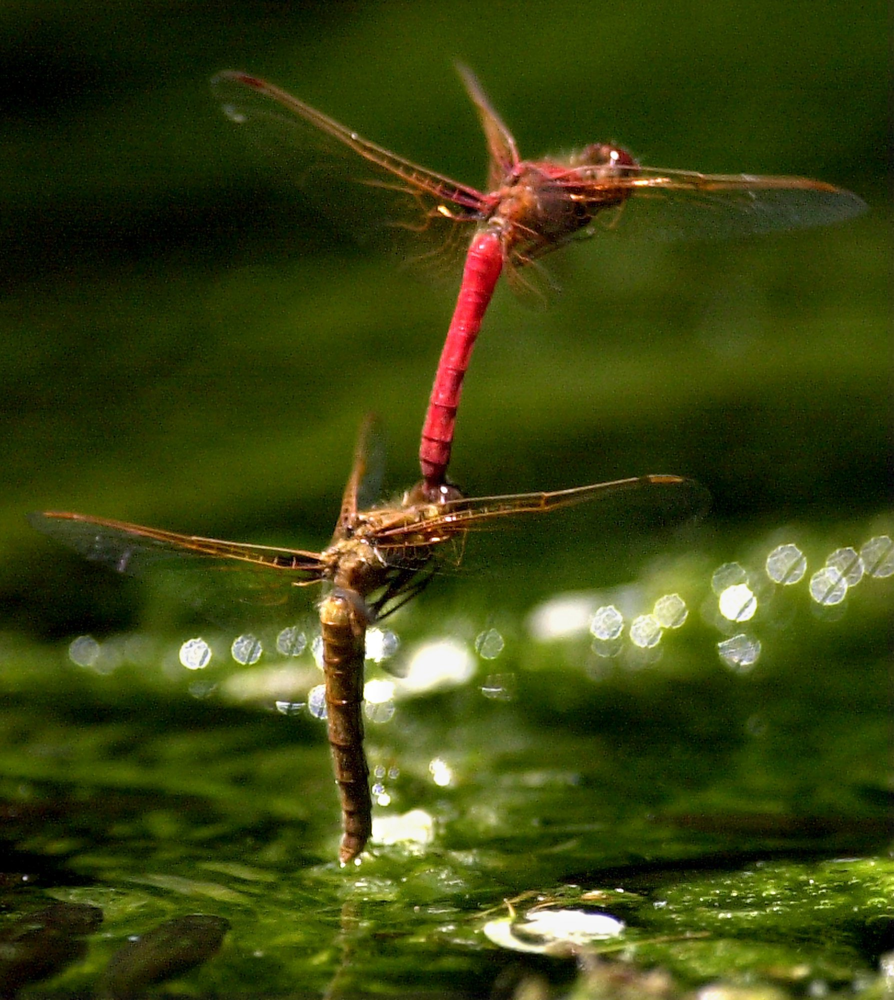

|
|
|
Vita
- 1945—Born, Tanta, Egypt.
- 1966—B.Sc. (summa cum
laude), Mechanical Engineering, Ain Shams
University, Cairo, Egypt.
- 1973—Ph.D., Fluid
Mechanics, The Johns
Hopkins University, Baltimore, Maryland.
- 1986–2002—Professor
of Aerospace
& Mechanical Engineering, University of Notre
Dame, Notre Dame, Indiana.
- 2002–2009—The Inez
Caudill Eminent Professor of Biomedical
Engineering and Chair of Mechanical
Engineering, Virginia
Commonwealth University, Richmond,
Virginia.
- 2009–present—The Inez
Caudill Eminent Professor of Biomedical
Engineering and Professor of Mechanical
& Nuclear Engineering, Virginia
Commonwealth University, Richmond,
Virginia.
- Fellow, The American
Association for the Advancement of Science.
- Fellow, The American
Academy of Mechanics.
- Fellow and Life
Member, The American Physical
Society.
- Fellow, The American
Institute of Physics.
- Fellow, The American
Society of Mechanical Engineers.
- Designated the
Fourteenth ASME
Freeman Scholar, 1998.
- Japanese
Government Research Award for Foreign Scholars,
1999.
- Alexander von
Humboldt Prize, 1999. For a word about von
Humboldt, click here.
- Inducted into the Johns Hopkins
University Society of Scholars, 2002.
- Designated ASME
Distinguished Lecturer, 2002–2005.
- Author of 18 books
and 460 scientific articles.
- Complete Resume.
- Or Short Biographical Sketch
of Mohamed Gad-el-Hak.

Flying insects and birds, through millions of years
of evolution, can change the shape of their wings,
subtly or dramatically, to adapt to various flight
conditions. The resulting performance and agility
are unmatched by any human-made airplane. For
example, the dragonfly can fly forward and backward,
turn abruptly and perform other supermaneuvers,
hover, feed, and even mate while aloft. Undoubtedly,
its prodigious wings contributed to the species’
survival for over 250 million years. The photo above
depicts a male and a female Cardinal Meadowhawk
dragonfly following airborne mating. The male has
towed the just-inseminated female to a pond and is
dipping her tail in the water so she can deposit her
eggs.
|
 |